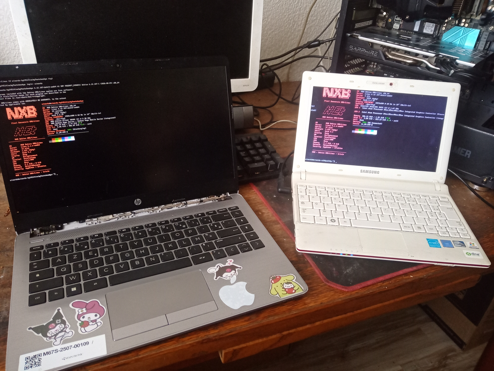

Pixel Souverain
Développement de Jeux Vidéo & Restauration Informatique Artisanale
Développement de Jeux Vidéo & Restauration Informatique Artisanale
Chez Pixel Souverain, chaque machine est traitée avec la minutie d'un véritable travail d'orfèvre. Mon engagement est entièrement dédié à la restauration et réparation artisanale faite à la main afin d'éviter la destruction inutile et préserver de la disparition les modèles d'exception, rares ou uniques.
Mon approche repose fermement sur l'éthique du logiciel libre et de l'open source gratuit. Pour redonner une seconde jeunesse et une stabilité maximale à ces architectures, j'installe des distributions Linux libres et optimisées — notamment via le projet NXB-Debian / Xebian32 — tout en proposant ponctuellement des configurations sous Windows selon les besoins spécifiques du matériel.
Comprendre la philosophie Pixel Souverain, c'est lier le geste d'atelier sur le matériel vintage (période 2008-2018) à la conception de solutions logicielles autonomes.
Inspection approfondie des cartes mères, dépoussiérage haute pression, renouvellement des pâtes thermiques et vérification des alimentations/châssis (Corsair, Dell).
Développement de modules noyau et d'utilitaires bas niveau (comme l'outil C/PKGBUILD pour les GPU Quadro K5000) pour exploiter le potentiel caché de vieux composants professionnels.
Déploiement d'images ISO légères testées en direct sur le parc pour garantir réactivité, sécurité et absence d'obsolescence programmée imposée.
Outils open-source et distributions sur-mesure développés pour la souveraineté numérique, le diagnostic et la réhabilitation matérielle.

Module noyau Linux open-source et utilitaire CLI en C conçu spécifiquement pour la prise en charge, le diagnostic et l'optimisation des cartes graphiques Quadro K5000. Paquets précompilés .deb et script PKGBUILD pour Arch Linux inclus.

Distribution Linux personnalisée au format Live ISO, pensée pour la rétro-compatibilité, la légèreté en RAM/CPU et le redémarrage/diagnostic rapide de parcs informatiques ou de machines anciennes.
Projet SourceForge
Découvrez cet univers RPG dark fantasy rétro mêlant exploration, combats tactiques au tour par tour et narration immersive.
Voir sur Steam
Explorez le projet Ratharak et accédez aux démos, mises à jour et contenus téléchargeables sur ma page itch.io.
Jouer sur itch.ioDécouvrez en images les coulisses et présentations de Pixel Souverain.
Spécialiste du reconditionnement et de l'optimisation matérielle sur stations d'accueil et boîtiers légendaires des marques Dell et Corsair. Traitement complet : nettoyage thermique, optimisation BIOS/Linux, et remise à neuf.

Préparation de tours, tests de charges GPU (Quadro K5000 / cartes dédiées) et reconditionnement de châssis pour la pérennité du parc informatique.

Remise en état complète de configurations gaming et boîtiers hautes performances (Obsidian, Carbide). Remplacement des pâtes thermiques, câble management rigoureux et dépoussiérage haute pression.

Reconditionnement de matériels professionnels Dell. Optimisation des performances matérielles, conversion SSD, ajouts de cartes graphiques dédiées et sécurisation des systèmes.
Pour toute question sur mes jeux ou pour confier une machine à restaurer :
📧 Email : winordz88@proton.me
📞 Téléphone : 07 60 16 24 51